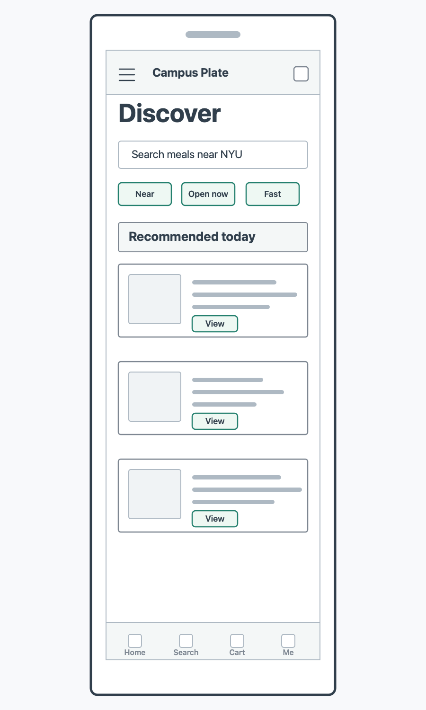
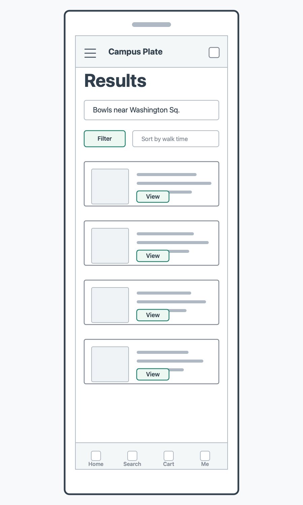
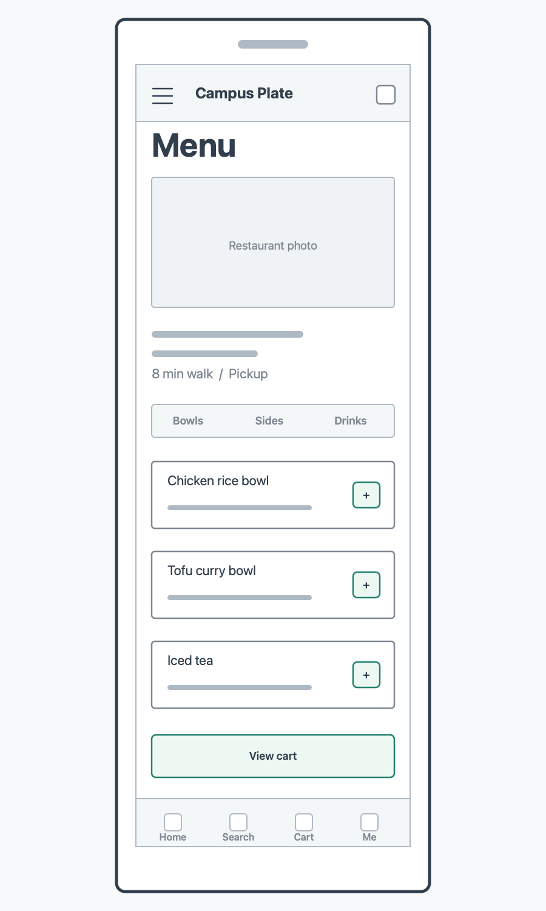
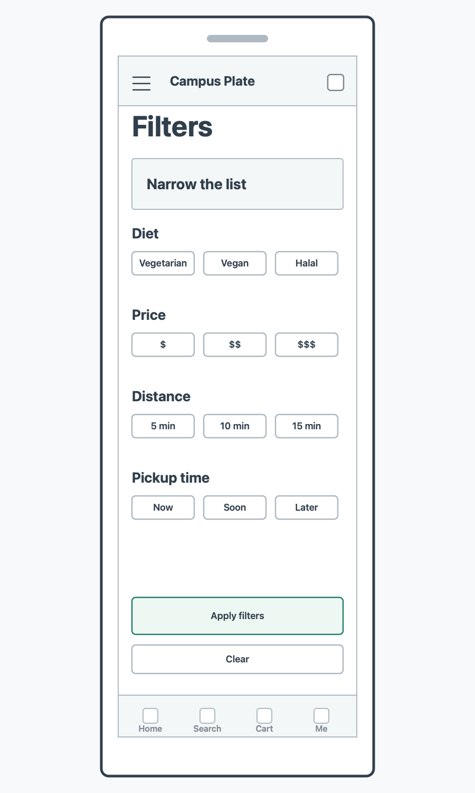
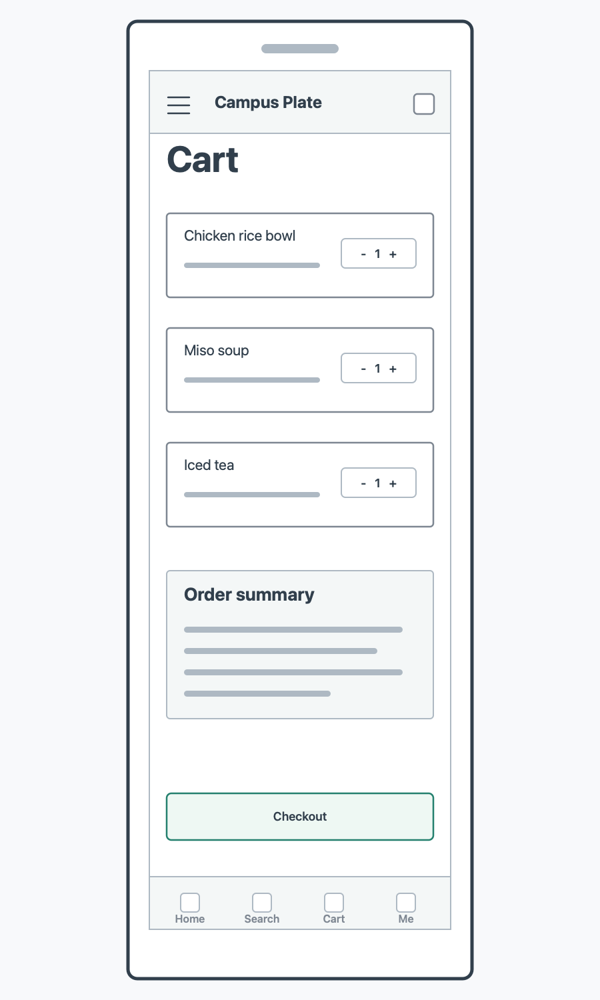
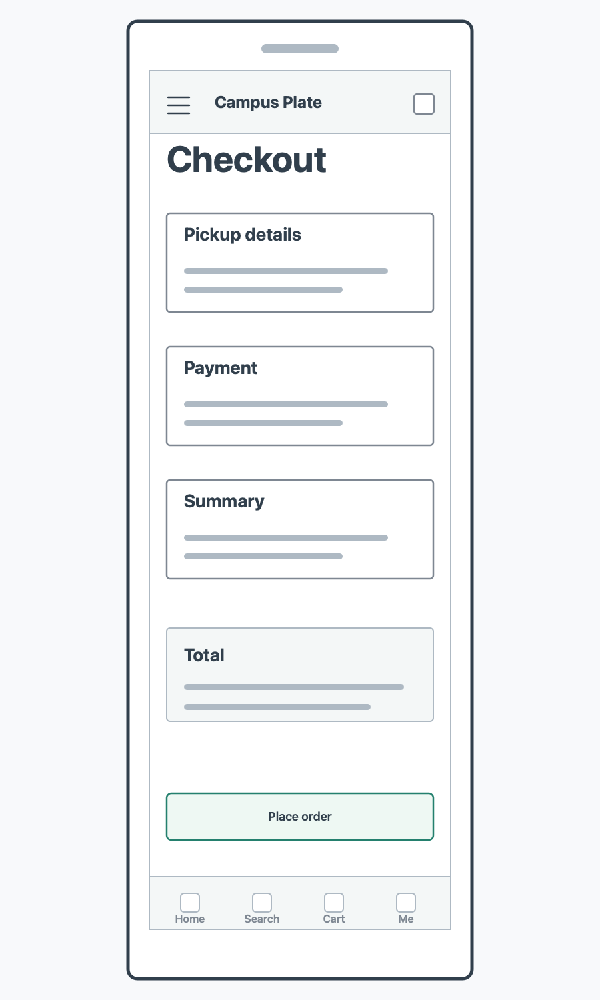
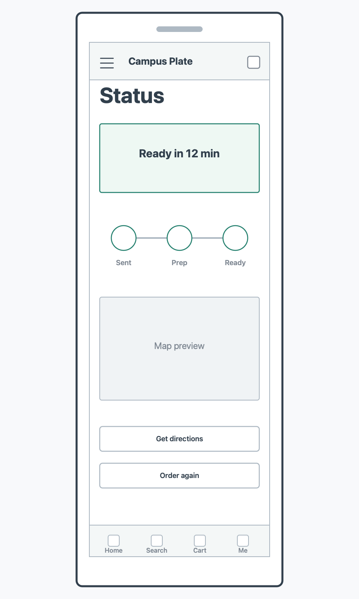
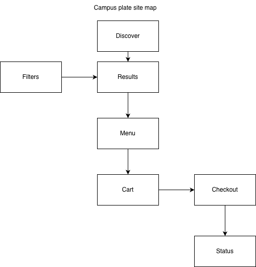

Clickable Prototype
The prototype shows the core flow from discovery through checkout and order status.
Wireframes







Site Map

Campus Plate is a mobile-first concept for NYU students who want to find nearby meals, compare pickup options, and place an order quickly between classes.
The prototype shows the core flow from discovery through checkout and order status.







